Project
JANDI
협업툴 JANDI의 디자인 시스템 구축 및 운영과 신규 기능의 UIUX 설계를 담당했습니다. 1인 디자이너 환경에서 효율적인 작업을 위해 디자인 시스템과 컴포넌트를 체계적으로 구축했습니다. 이를 기반으로 신규 기능 설계와 사용자 경험 개선을 안정적으로 진행했습니다.
Overview
잔디는 팀 커뮤니케이션과 협업을 위한 SaaS 서비스로, 개인과 기업 사용자에게 효율적인 업무 환경을 제공합니다. 현재 약 3,900개 팀이 사용하고 있으며 메시지, 파일, 할 일 등을 하나의 공간에서 통합 관리할 수 있으며, 실시간 소통을 통해 업무 흐름을 빠르게 공유할 수 있습니다.
프로젝트와 업무 단위로 대화를 구조화하여 필요한 정보를 쉽게 찾을 수 있고, 다양한 외부 서비스 연동을 통해 업무 생산성을 높일 수 있습니다. 또한 직관적인 인터페이스를 기반으로 팀원 간 원활한 협업을 지원하며, 업무 히스토리를 체계적으로 축적하고 활용할 수 있습니다.

User Research
잔디를 사용하는 기업 고객을 대상으로 CX팀과 함께 싱클리를 통한 피드백을 수집하여, 실제 사용 과정에서 발생하는 불편 요소와 개선 요구를 파악했습니다.
수집된 의견을 기능 단위로 분류하고 중요도 기준으로 재정리하여, 제품 개선 방향과 우선순위를 도출하는 데 활용했습니다.
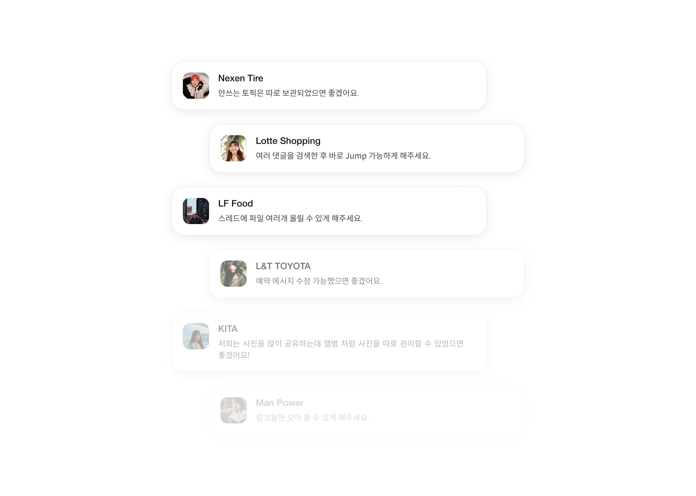
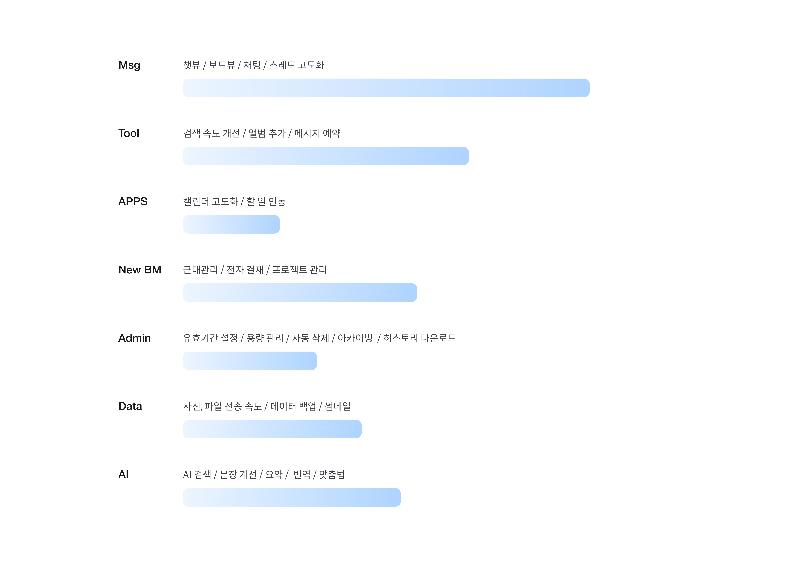
Voice of Customer(좌) / Feature Filtering(우)
TO-BE Solutions
VoC 리서치와 비즈니스 목표를 기반으로, 페인포인트 해소부터 UI 개편·AI 도입·디자인 시스템 구축·랜딩 강화까지 작업 방향을 6가지로 정의했습니다.
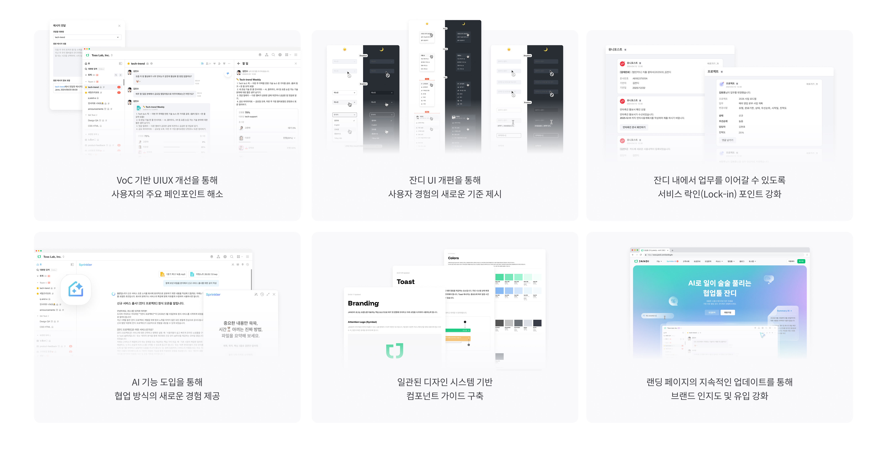
UX Goal
사용자 경험의 목표는 "사용자의 업무 흐름을 원활하게 하여 직관적이고 효율적인 환경을 만들고, 잔디 내에서 업무가 끊기지 않고 자연스럽게 이어지는 협업 경험을 설계하며 AI와 기능 확장을 통해 새로운 업무 방식을 제시한다. 결과적으로 사용자 경험과 서비스 가치를 함께 성장시킨다."로 정하여 진행하였습니다.
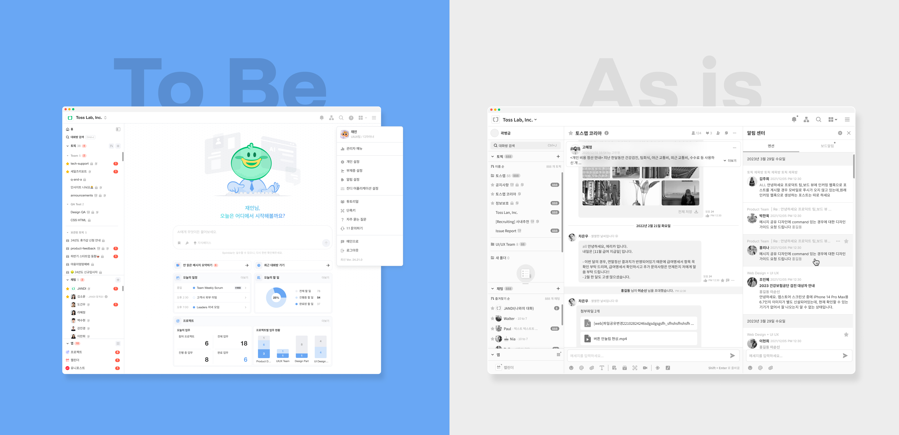
Design Style Guide
JANDI 서비스의 경우 기본적으로 한국어 외 5개국의 언어를 지원하며 플랫폼 별로 다국어 구분하여 개별 System Font를 사용합니다.
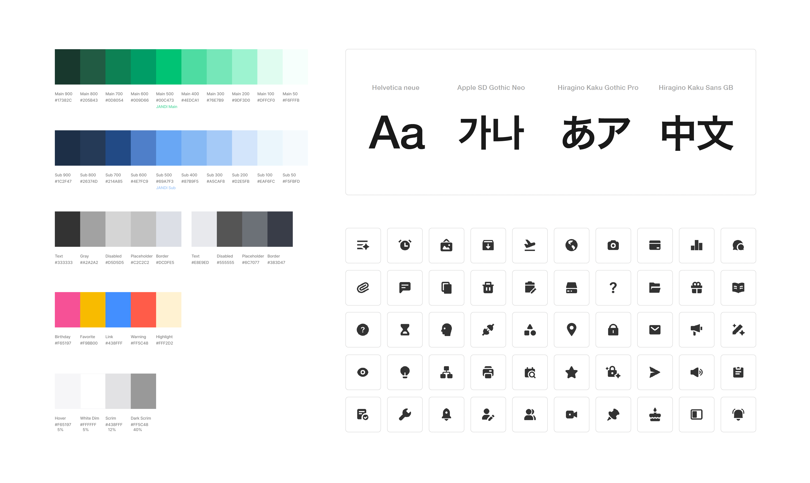
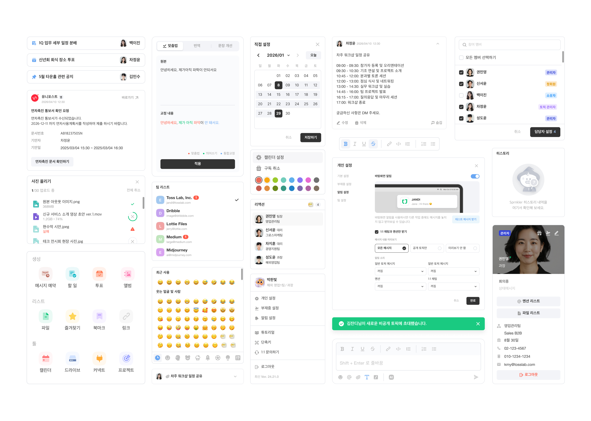
Components
JANDI Landing
기존에는 앱 진입 시 빈 화면만 노출되어 사용자가 직접 탐색해야 했습니다. 랜딩 화면을 신설해 AI 요약·일정·할 일을 한눈에 파악할 수 있도록 설계하고, 프롬프트 입력창을 함께 배치해 진입과 동시에 업무를 시작할 수 있는 흐름을 만들었습니다. 이 화면은 AI 플랜 미사용 사용자에게도 공통 노출되어, 자연스러운 업셀링 진입점으로도 작용합니다.
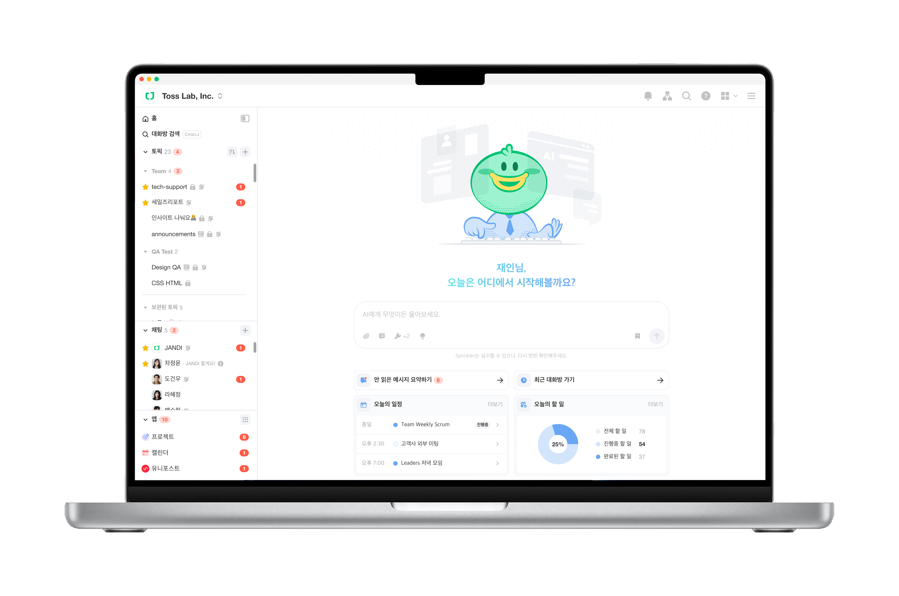
JANDI Home
최초 진입 화면과 달리, Home은 로그인 이후 반복 방문하는 공간입니다. 나에게 할당된 업무 현황을 한눈에 파악하고 바로 프롬프팅을 시작할 수 있도록 설계했으며, 파일·이미지·대화방 등 멀티모달 입력을 지원해 회의록·보고서 등 실무 맥락에 맞는 AI 결과물을 즉시 생성할 수 있습니다.
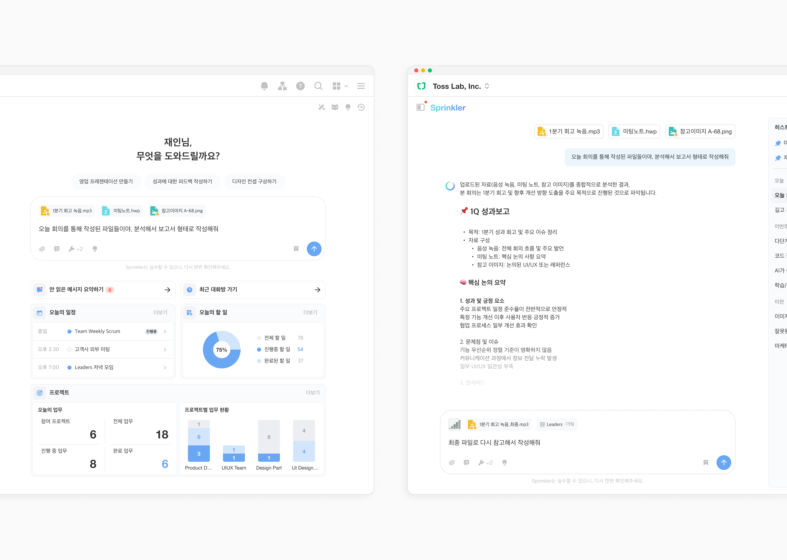
Sprinkler AI
히스토리를 통해 이전 대화를 이어서 사용할 수 있으며, 필요한 경우 Pinned 기능으로 고정해 쉽게 다시 찾을 수 있도록 했습니다. 이는 단순한 휘발성 대화를 넘어, AI의 결과물을 개인의 업무 자산으로 아카이빙하고 관리할 수 있는 환경을 지원합니다.
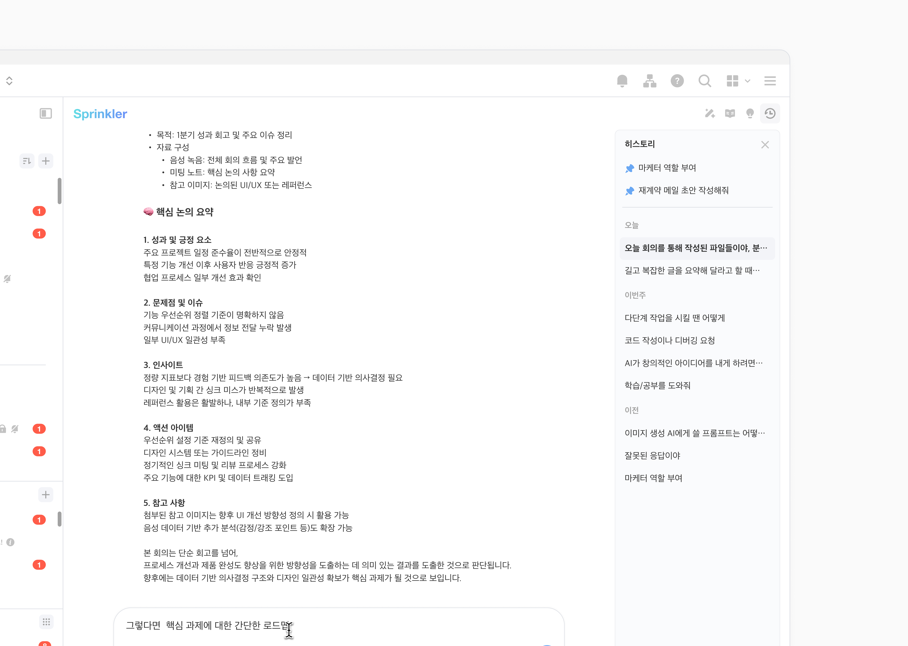
Sprinkler AI - Floating Panel
생성형 AI는 Floating Panel 형태로 제공되어 홈 화면에 국한되지 않고, 다양한 대화방에서 자유롭게 호출해 맥락을 이어가며 사용할 수 있습니다. 히스토리가 동기화되어 어느 대화방에서 시작하든 이전 프롬프트를 이어받을 수 있고, 제목 수정과 최소화 기능으로 유연하게 관리할 수 있습니다.
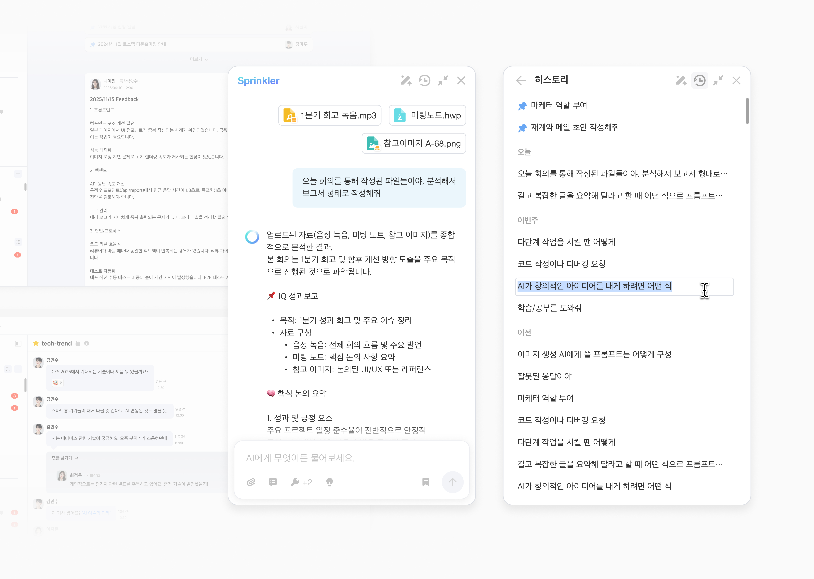
LNB Layout Optimization
검색 기능이 모달 구조로 동작하며 사용 빈도가 낮았던 프로필 영역을 GNB로 이동시키고, Home 메뉴를 상단에 배치해 주요 기능의 접근성을 재정의했습니다. 또한 과도한 구분선을 제거하고 여백과 명도 대비를 조정해 시선 흐름을 단순화했으며, 정렬·필터·팀 초대 등 자주 사용하는 인터랙션을 리스트 내부 맥락에 맞게 재배치해 탐색 효율과 컨텐츠 가독성을 함께 개선했습니다.
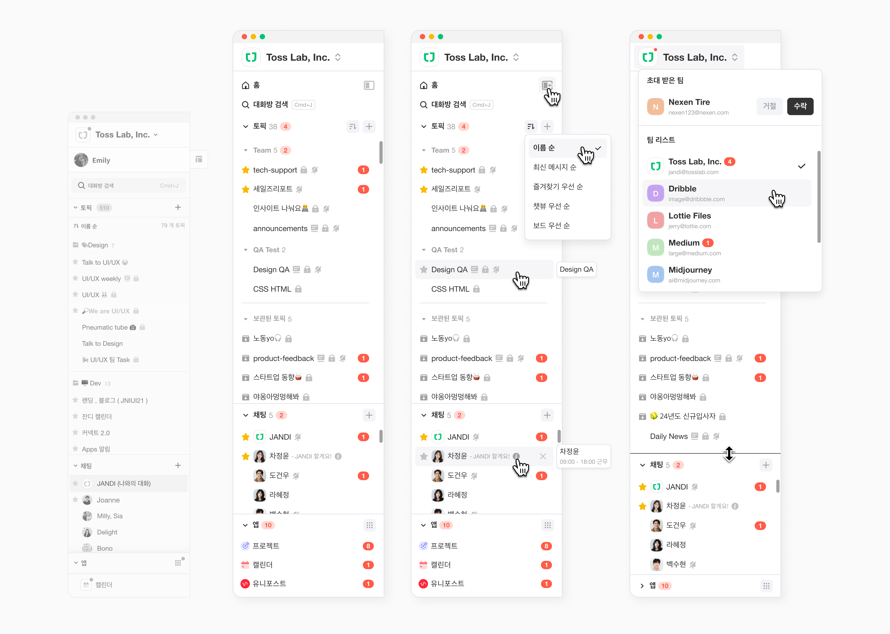
Board view Re-design
기존 모달 기반의 게시글 작성 방식은 사용 흐름을 단절시키고, 이전 게시글을 참고하기 어렵다는 문제가 있었습니다. 이를 해결하기 위해 작성 영역을 우측 패널 구조로 재설계해 피드를 탐색하면서 동시에 글을 작성할 수 있도록 개선했으며, 게시글 카드 역시 정보 우선순위에 맞춰 여백·타이포그래피·메타 정보 구조를 정리해 더 빠르게 내용을 인지할 수 있는 읽기 경험을 제공했습니다.
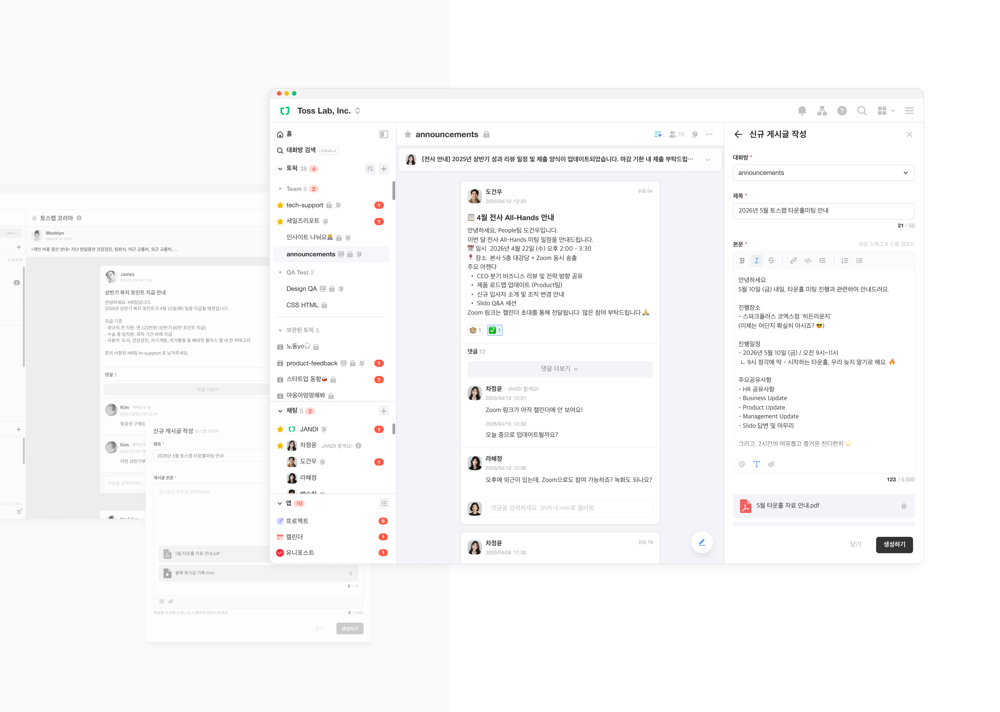
GNB - Tool
조직도는 정보 구조를 유지하되 시각적 위계와 탐색 편의성을 개선했고, 도움말은 업데이트 소식·기능 활용팁·가이드를 한 곳에서 확인할 수 있도록 신규 설계했습니다. 검색은 상단 필터 위계를 정리하고 로딩 중 UI를 적용해 체감 속도를 개선했습니다.
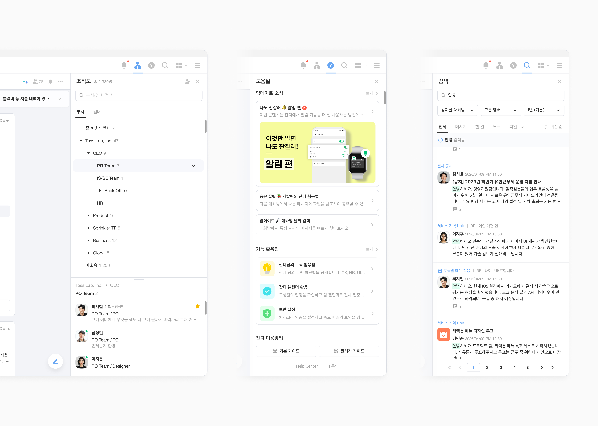
Tool - Todo, Poll
기존에는 제목만 노출되어 내용 파악을 위해 추가 클릭 동작이 필요했습니다. 본문 내용과 할 일의 진행률 바, 투표의 후보 진행율을 말풍선에서 바로 보여주도록 개선했습니다.
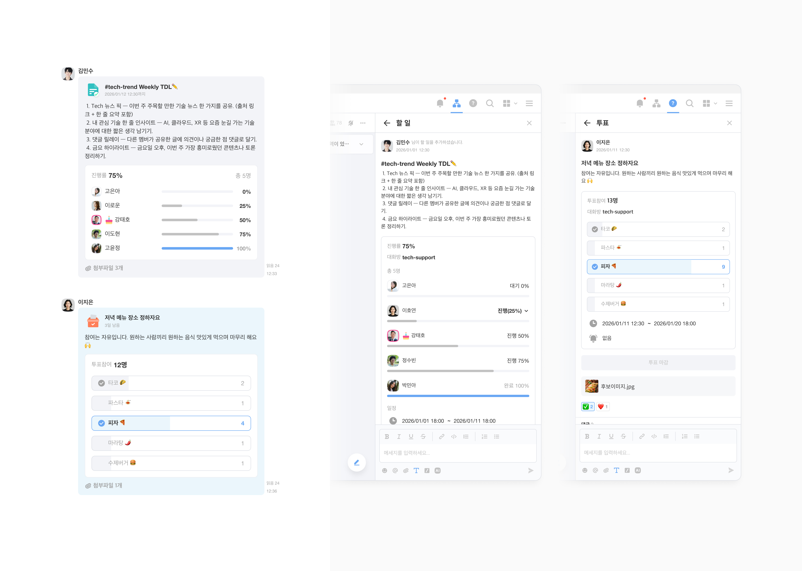
Tool - Context Driven Album
대화방 내의 수많은 이미지와 영상을 업무 맥락에 맞게 별도의 공간에서 관리하는 앨범 기능을 신규 설계했습니다. 앨범별 그룹화를 통해 업무 히스토리를 시각적으로 추적할 수 있으며, 필요한 미디어 자산을 빠르게 찾고 공유함으로써 원활한 업무 환경에 도움을 줍니다.
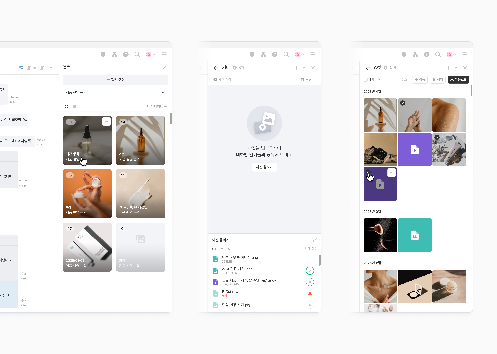
Squircle Avatar
기존의 단순한 원형 프로필에서 벗어나 Squircle 형태를 적용하여, 익숙한 형태에서 오는 시각적 피로를 완화하고 보다 트렌디한 인상을 제공했습니다. 또한 원형 대비 더 넓은 영역의 이미지를 노출할 수 있어 프로필 정보 전달력을 높였으며, 둥근 사각형에서 발생할 수 있는 시각적 왜곡을 보완해 안정적인 형태감을 구현했습니다. 특히 다양한 상태와 정보를 담는 잔디의 프로필 특성상, Squircle 형태만으로도 UI 전반에 자연스러운 변화와 일관된 인상을 줄 수 있도록 설계했습니다.
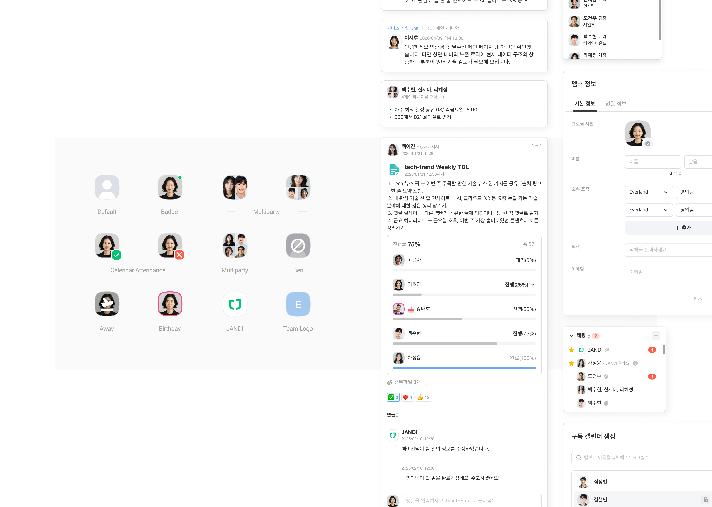
Confirmation Modal Re-design
기존 모달의 경우 타이틀과 본문의 위계가 불분명하고, 내용 대비 과도하게 넓은 가로 폭과 불안정한 가운데 정렬로 인해 정보가 분산되고 가독성이 저하되는 문제가 있었습니다. 이를 개선하기 위해 상황별 메시지 전달과 사용자 액션의 명확성을 강화하고, 모달의 정보 구조와 버튼 위계, 피드백 방식을 일관된 패턴으로 정리했습니다. 그 결과, 사용자가 보다 빠르고 정확하게 의사결정을 내릴 수 있도록 개선했습니다.
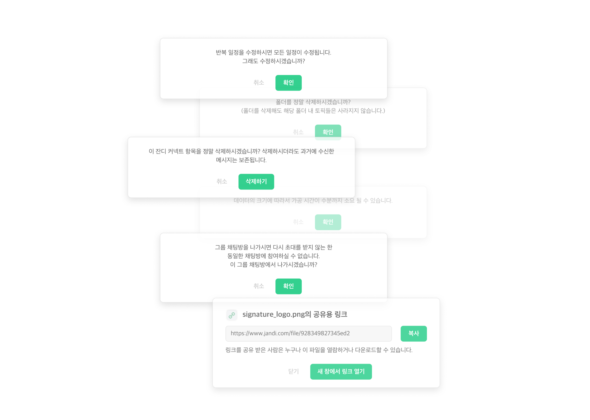
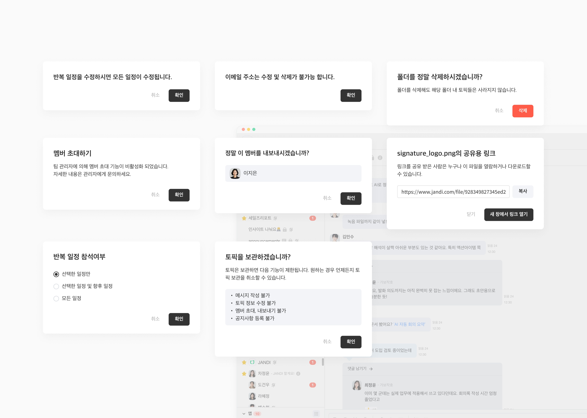
As-is(좌) / To-be(우)
Theme Layering Model
기존에는 테마별 색상 기준이 명확하지 않아 일관된 운영이 어려운 상태였고 이 문제를 개선하고 개발자와의 협업 효율을 높이기 위해, 확장 가능한 구조의 테마 레이어링 모델을 설계했습니다. 라이트와 다크 테마 모두에서 일관된 경험을 위한 명도 기반의 레이어링을 적용했으며, 레이어가 쌓일수록 명도가 단계적으로 변화하는 구조를 통해 테마 확장 시에도 규칙 기반으로 시스템을 적용할 수 있도록 했습니다.
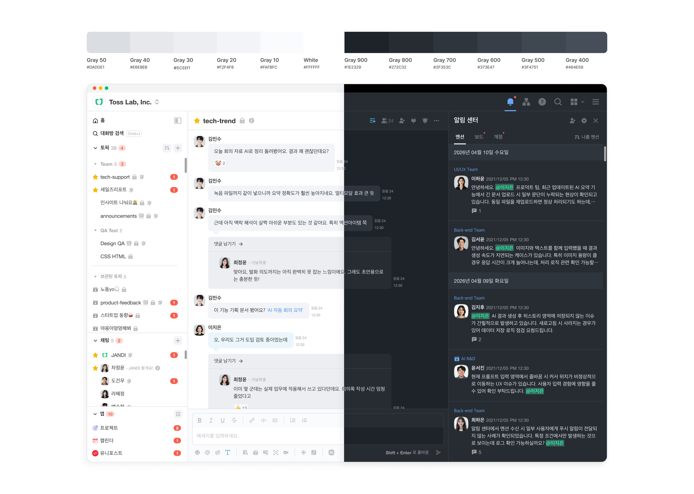
App - Project
잔디 앱 리스트에서 접근 가능한 프로젝트 서비스는 업무를 체계적으로 관리할 수 있도록 지원하는 Add-on 기능입니다. 잔디에서 알림이 연동되며 프로젝트 진행 상황을 한눈에 파악하고 효율적으로 관리할 수 있는 협업 관리 경험을 제공합니다. 레드마인 기반의 외부 서비스를 잔디의 디자인 시스템에 맞게 재설계한 작업으로 퍼블리셔와 둘이서 UI 전반을 새로 정의하였습니다.
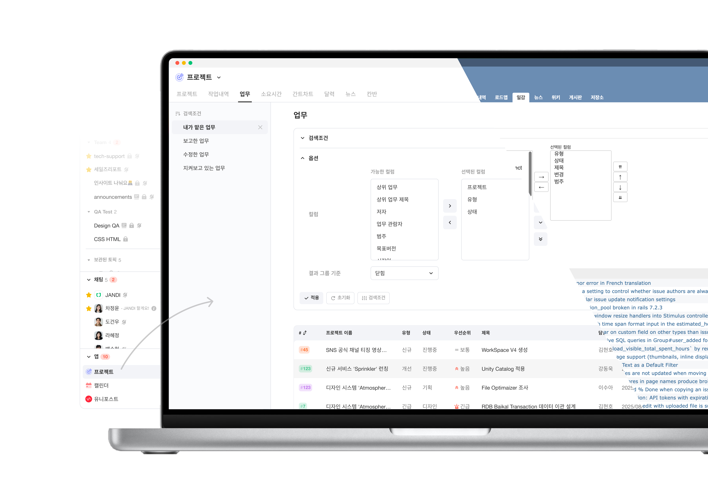
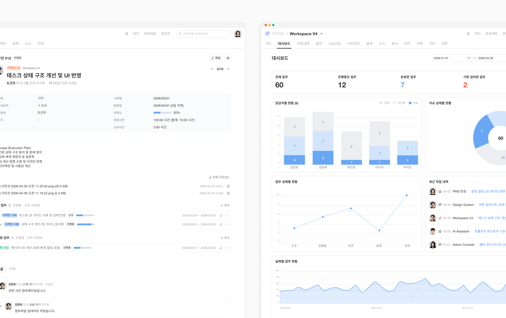
업무상세(좌) / 대시보드(우)
Project - View mode
잔디에 없는 칸반·캘린더 뷰를 신규 디자인 하였습니다. 컴포넌트를 새로 정의하면서도 잔디의 컬러 시스템과 공통 컴포넌트들은 동일하게 적용해 두 서비스 간 시각적 일관성을 유지했습니다.
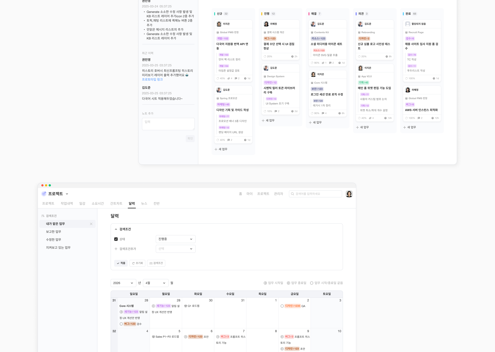
APP
JANDI Mobile
잔디는 팀 커뮤니케이션과 협업을 위한 SaaS 서비스로, 모바일 환경에서도 끊김 없는 업무 경험을 제공합니다.
언제 어디서든 메시지, 파일, 알림을 빠르게 확인하고 팀과 소통할 수 있도록, 모바일에 최적화된 UX를 설계했습니다. 토픽 구조와 채팅 흐름을 작은 화면에서도 직관적으로 탐색할 수 있도록 정보 구조와 시각적 위계를 중심으로 화면을 설계했습니다.
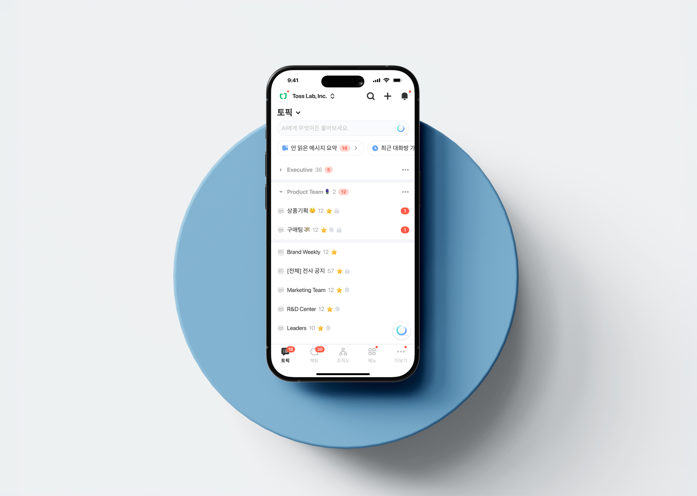
JANDI Landing
잔디 랜딩 화면 개선안으로, 토픽·채팅 리스트 상단에 AI 기능을 배치해 별도 진입 없이 업무 내용을 빠르게 파악할 수 있도록 했습니다. 팀 전환 메뉴는 기존 좌→우 슬라이드 방식에서 상→하 수직 리스트로 변경해 시각적 여백 확보와 팀 간 전환 편의성을 개선했습니다. 또한 안 읽은 메시지 요약 패널을 통해 대화방 진입 전에도 주요 내용을 미리 확인할 수 있어 정보 탐색 시간을 줄여줍니다.
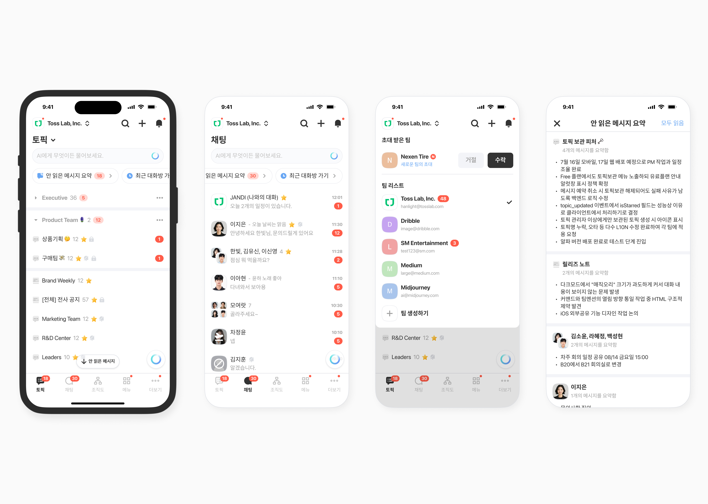
Topic, Chat List(좌) / Team Select (중앙) / Unread Summary(우)
Sprinkler AI
웹 중심으로 설계된 Sprinkler AI를 모바일에서도 자연스럽게 사용할 수 있도록 설계했습니다. 작은 화면에서도 파일 첨부·프롬프트 입력·히스토리 탐색이 끊기지 않도록 모바일 특성에 맞게 레이아웃과 인터랙션을 조정했습니다.
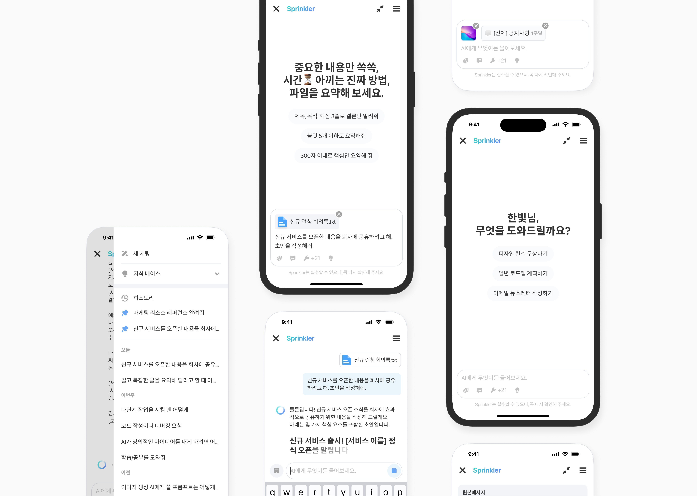
메시지 AI 어시스턴트
메시지 입력 화면에 있는 AI 어시스턴트 기능은 입력창 하단에 맞춤법·번역·문장 개선 세 가지 기능을 탭 형태로 제공합니다. 문장 개선 기능은 대화 맥락을 파악해 어색한 표현을 자연스럽게 다듬어 제안하며, 맞춤법 기능은 맞춤법·띄어쓰기·통합교정을 한 번에 처리하고 오류 부분을 시각적으로 강조해 빠르게 확인하고 수정할 수 있습니다. 다시 요청 및 적용 버튼을 통해 AI 제안을 즉시 반영하거나 재생성할 수 있어, 메시지 작성 흐름을 끊지 않고 더 정확하고 자연스러운 커뮤니케이션을 지원합니다.
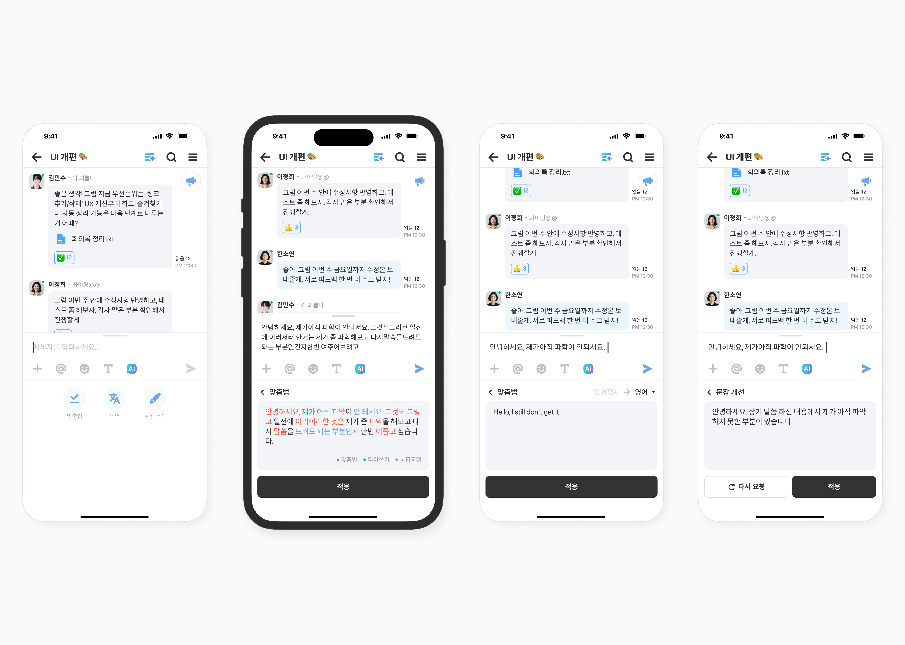
통합 검색
기존에는 메시지 내용만 검색 가능했고, 파일·멤버·할 일 등 Tool 영역은 별도 플로우로 접근해야 했습니다. 이를 하나의 검색으로 통합하고 상세 필터를 신규 설계해 필요한 정보를 한 번에 찾을 수 있도록 개선했습니다.
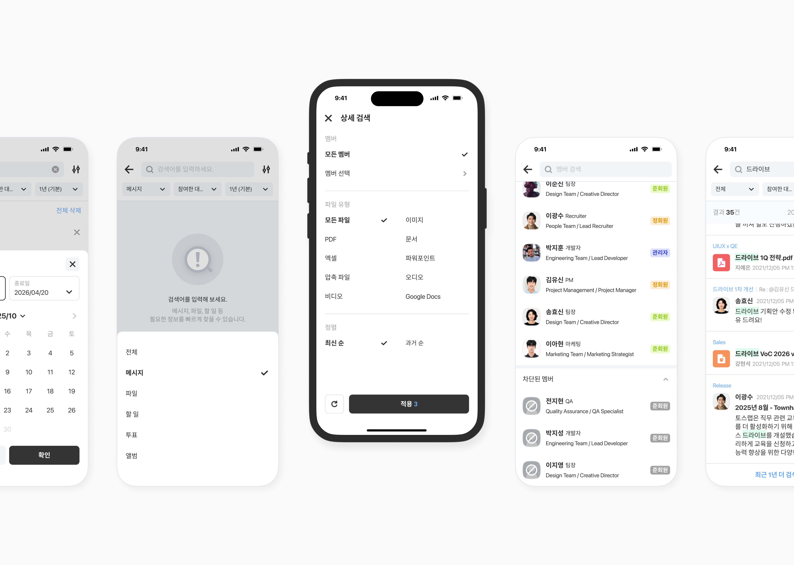
조직도 Re-design
출시 이후 한 번도 개선되지 않아 시각적으로 노후화된 조직도 UI를 전면 개편했습니다. 기능의 추가보다 정보 구조와 탐색 경험을 현재 디자인 기준에 맞게 재정비하는 데 집중했습니다.
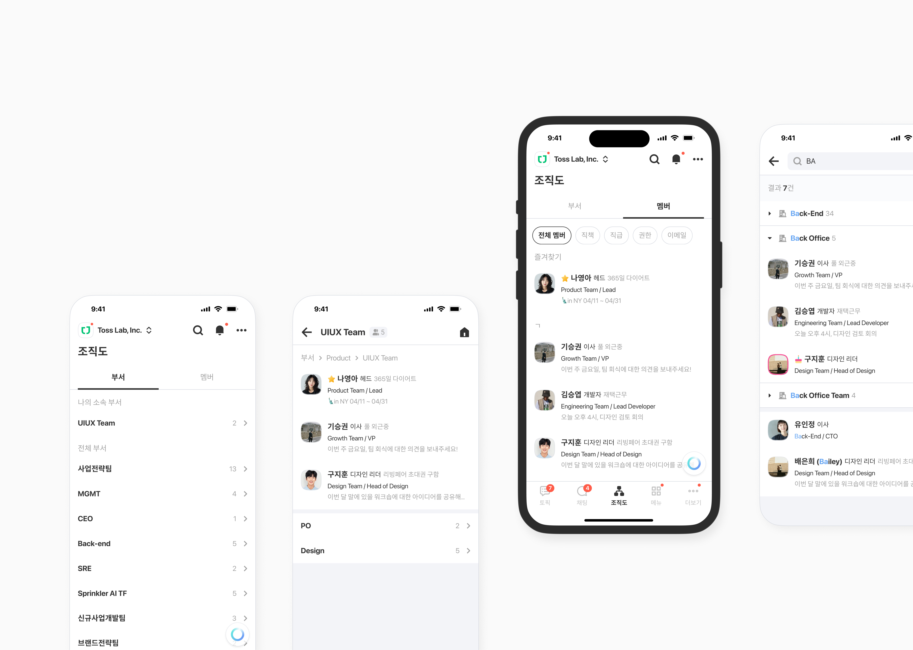
Message Format Toolbar
기존에는 마크다운 문법을 직접 입력해야 서식을 적용할 수 있었고, 파일은 한 개씩 텍스트와 분리되어 전송되었습니다. 텍스트 선택 시 인라인 툴바를 노출하고, 파일 다중 첨부 및 텍스트와 함께 묶어 전송할 수 있도록 개선해 메시지 작성 경험 전반을 개선했습니다.
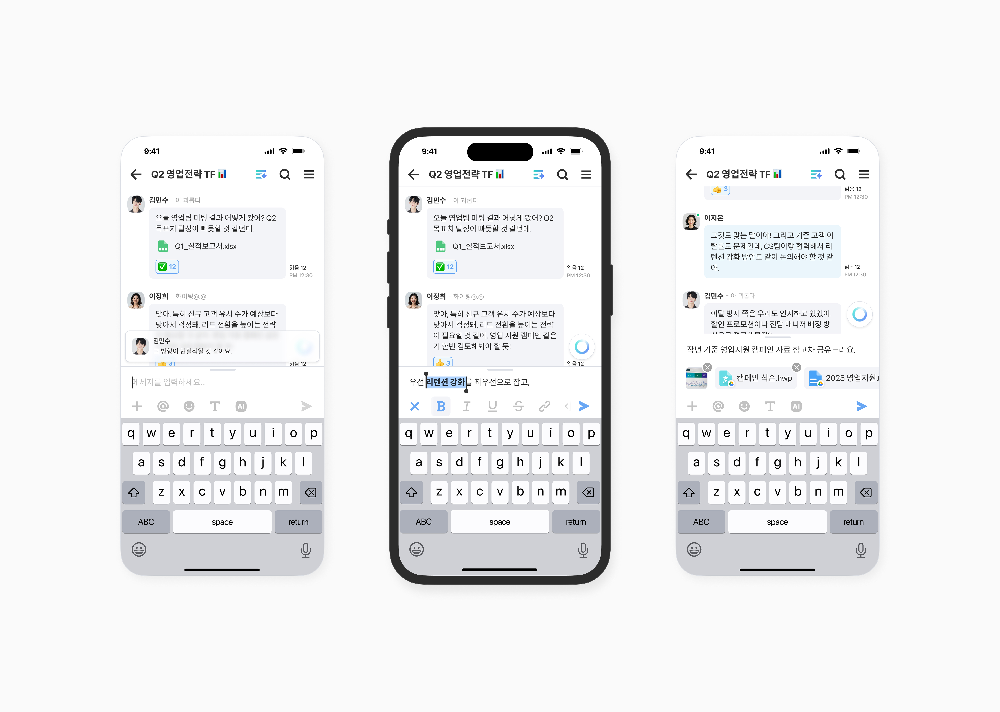
App Tool - Todo, Poll
툴 메뉴 항목이 늘어남에 따라 그룹핑과 레이아웃을 재정비해 사용자가 원하는 툴을 빠르게 찾을 수 있도록 했습니다. 투표는 선택지와 득표 현황을, 할 일은 진행률 바와 담당자 상태를 표면에서 바로 인지할 수 있도록 웹과 동일한 기준으로 개선했습니다.
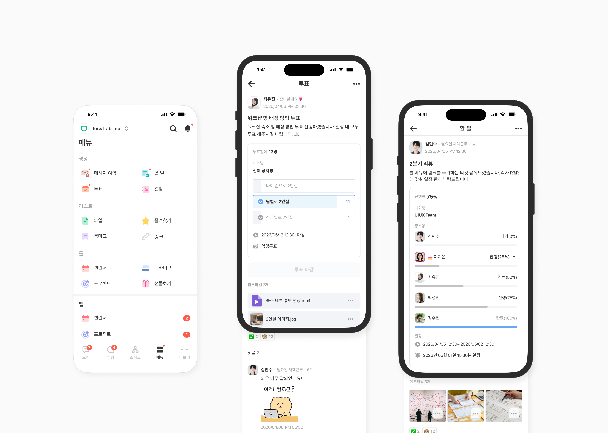
App Tool - Context Driven Album
대화방 내 미디어를 맥락별로 분류·관리할 수 있는 앨범 신규 설계안으로, 사진·카메라·동영상 업로드를 지원하고 채널 주제나 촬영 날짜 기준으로 앨범을 자동 구성해 원하는 파일을 빠르게 찾을 수 있습니다. 사진 관리 모드에서는 월별 그룹 선택을 제공해 대량의 미디어를 한 번에 선택·다운로드·삭제할 수 있으며, 앨범 단위로 공유·수정·삭제 등의 관리 액션도 지원해 팀 내 파일 관리 효율을 높였습니다.
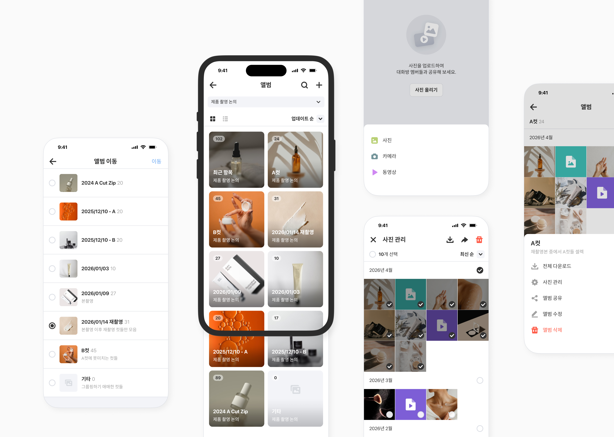
Toast UI Re-design
기존 토스트는 단일 다크 스타일로 성공·경고·오류·안내를 구분할 수 없었습니다. 유형별 컬러와 아이콘을 적용하고 액션 버튼을 추가해, 사용자가 읽기 전에 상황을 즉각 인지하고 바로 반응할 수 있도록 개선했습니다.
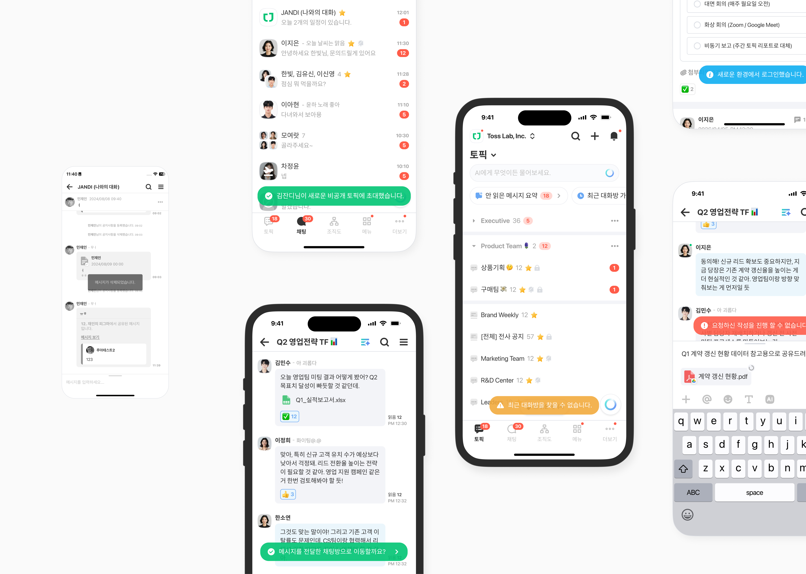
App Theme Layering Model
모바일 다크 모드는 웹과 동일한 테마 레이어링 시스템을 공유합니다. 플랫폼이 달라도 같은 컬러 토큰 기준이 적용되어 디자인·개발 양쪽의 중복 작업 없이 일관되게 유지할 수 있습니다.
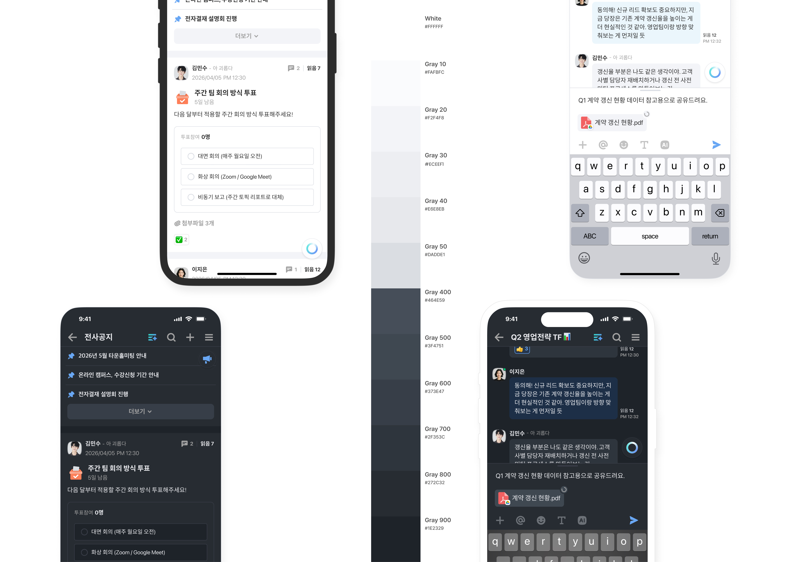
Design Guide Library (Foundation)
디자이너가 단독으로 작업하는 환경이었기 때문에, 기준을 명확히 정리할 필요가 있었습니다. 웹과 모바일을 동시에 다루는 과정에서 플랫폼 간 스타일 편차가 발생하기 쉬웠고, 이를 줄이기 위해 공통 Foundation을 기반으로 작업했습니다. 그 결과 두 플랫폼 간의 일관성을 보다 안정적으로 유지할 수 있었습니다.
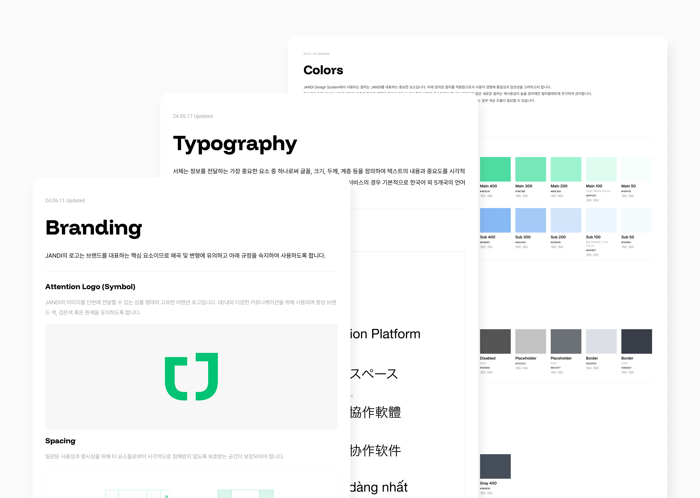
Design Guide Library (Component)
컴포넌트는 Foundation 위에 구성되는 기본 작업 단위입니다. 버튼이나 입력창처럼 반복 사용되는 요소는 사전에 기능과 상태를 정의하지 않으면 화면별로 미세한 차이가 발생하기 쉽습니다. 컴포넌트 라이브러리는 이러한 편차를 줄이고, 일관된 기준으로 관리하기 위한 구조로 설계했습니다.
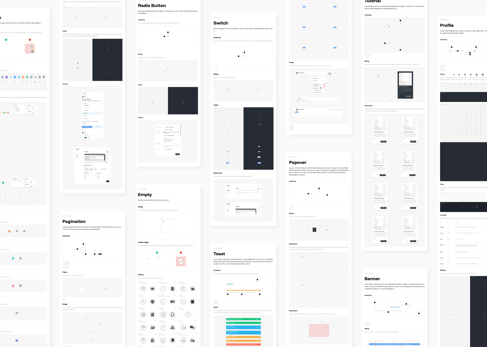
Wrapping up — JANDI
마무리
2년간 웹과 모바일을 병행 운영하며, 명확한 기준 없이 화면이 확장될 경우 일관성이 빠르게 무너지고 유지 비용이 증가한다는 문제를 경험했습니다. 이를 해결하기 위해 디자인 기준과 구조를 선제적으로 정의하고, 모든 의사결정이 비즈니스 맥락과 연결되도록 설계 방식을 개선했습니다.
AI 기능 또한 개별 기능이 아닌 업무 흐름 중심으로 재구성하여 사용자가 자연스럽게 기능을 연결해 사용할 수 있도록 설계했습니다. 그 결과, 평균 세션 시간 52분의 높은 사용 몰입도를 보이는 서비스 환경을 구축했으며, 21만명의 월간 활성 사용자 규모에서도 안정적인 사용 경험을 유지했습니다. 총 96건의 피처 디자인과 20건의 신규 기능 설계를 통해 제품 확장성과 일관성을 동시에 확보했습니다.